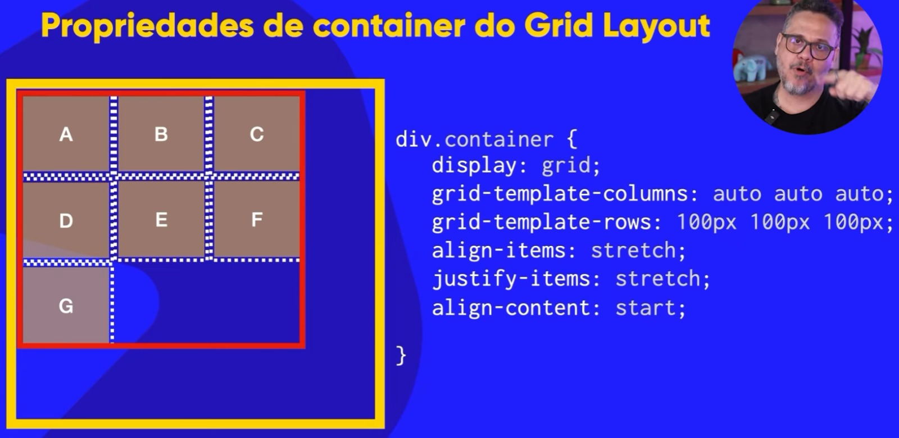
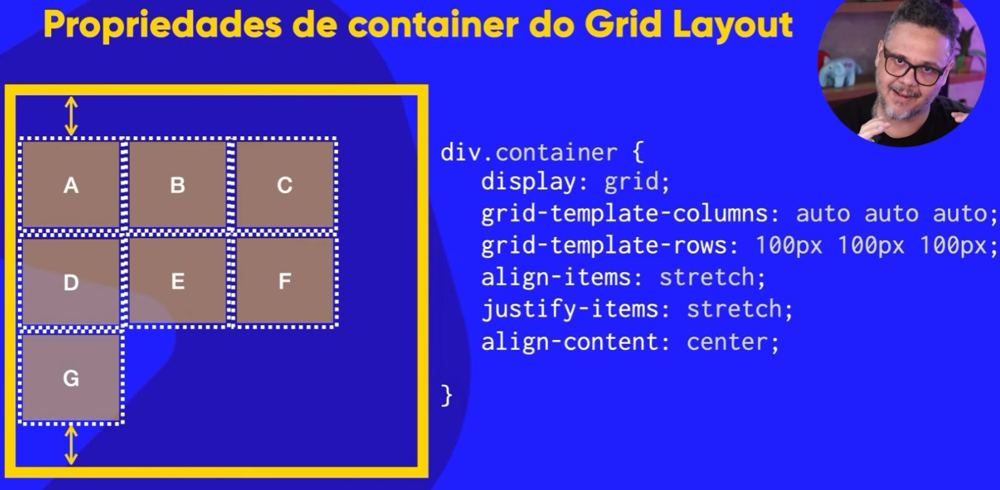
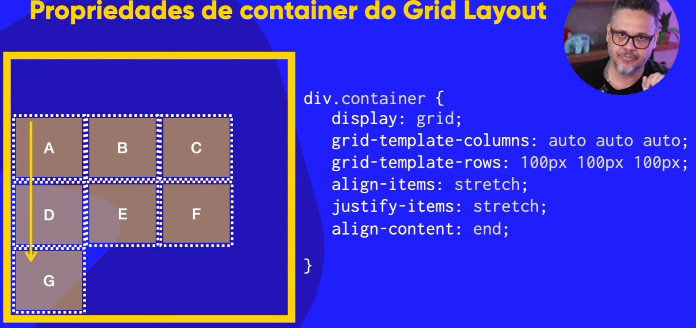
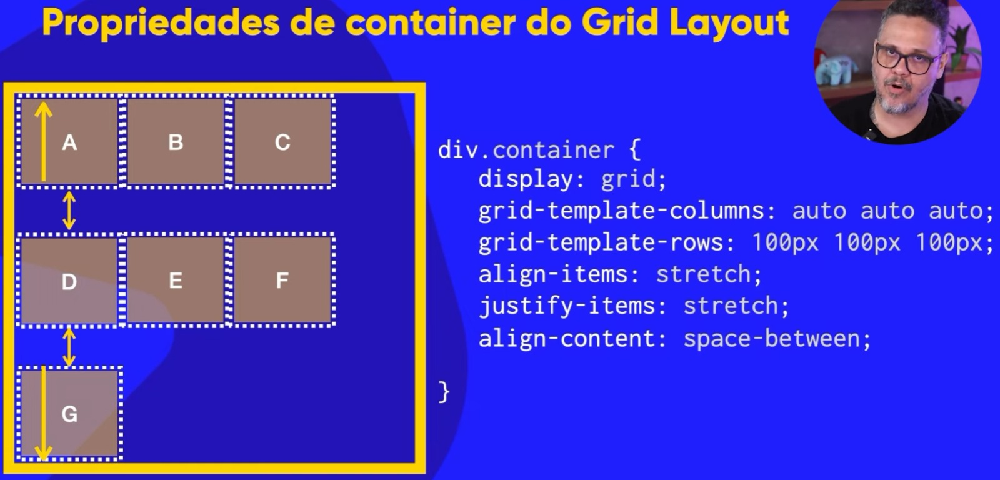
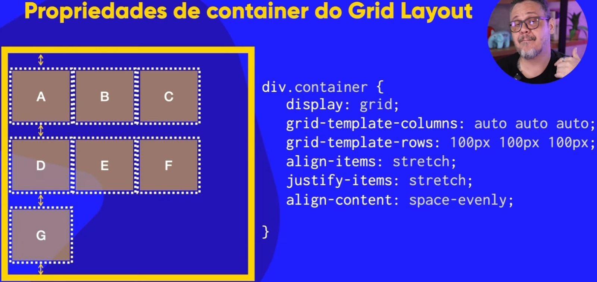
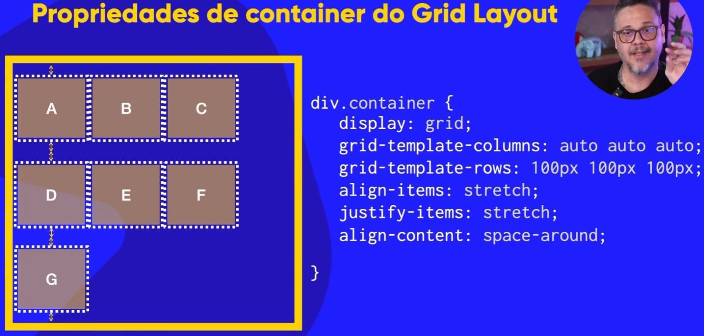

A
B
C
D
E
F
G
align-itemsAo usarmos a propriedade grid, o valor padrão para o align-items:" " é stretch.
Ou seja, sempre que usarmos a propriedade Grid, a propriedade align-items já terá como padrão o valor stretch e por isso ao adicionar os columns e os rows, o item virá esticado
para fazer com que ele caiba dentro da grade(grid).
Lembrando que no GRID, as propriedades align-items e align-content alinham VERTICALMENTE!
Eis aqui alguns valores e seus outputs para colocar dentro da propriedade align-items:
start, ele vai pegar todos os items e coloca-los no início. Eis um exemplo: 
center, ele vai pegar os items e centraliza-los verticalmente. Eis um exemplo:

end, os items irão ficar na parte de baixo do container. justify-itemsAo usarmos a propriedade grid, por padrão, o valor da propriedade justify-items é stretch.
Lembrando que ao usarmos a propriedade justify-items, ele irá alinhar HORIZONTALMENTE!
Agora, vamos aos valores e seus resultados:
start, o item irá ficar no início horizontal. Veja o exemplo: 
center, os items irão obviamente ficar na parte central horizontalmente dentro do container. Eis a imagem de exemplo:

end, como já sabemos, o item irá ficar na parte final horizontalmente. Eis a imagem de exemplo abaixo:

align-contentAcabamos de falar sobre as propriedades align-items e justify-items, agora iremos aprender sobre a propriedade align-content.
Por padrão, o valor da propriedade align-content é start.
Lembrando que agora que estamos falando sobre o content, estamos falando do conteúdo e não mais do item(que é o quadradinho com a letra) e sim do conteúdo que está em vermelho na imagem a seguir. ↓

Veja a propriedade align-content com cada valor e seus outputs:
align-content: center, o conteúdo irá ficar centralizado como na imagem a seguir:

align-content: end, o conteúdo irá para baixo como na imagem abaixo:

space-between, o primeiro item(nesse caso a letra A) e o último item(letra G), ficarão colados opostos um do outro com um espaçamento no meio como diz o próprio nome do valor Ou seja, o D, E e o F que são a track do meio, ficará centralizada! Ou seja, o espaço entre eles(space-between) será distribuído igualmente. Veja a imagem. 
space-evenly, ele vai alinhar os itens verticalmente acima, abaixo e entre as tracks horizontais de forma iguais. Veja a imagem abaixo para entender melhor:

space-around, como diz o próprio nome, ele vai colocar um space em volta dos items. Ou seja, ele vai distribuir acima e abaixo de cada item tenha exatamente o mesmo espaço. Só que, o primeiro e o último item, vai ficar mais perto da borda. Por isso o space-around tem o mesmo espaço ao redor do item. Mas na track horizontal do meio, os items tem um espaçamento maior que os que estão próximos da borda. Veja na imagem:

justify-content:O justify-content, faz a mesma coisa que o align-content mas no HORIZONTALMENTE!.
Caso queira ver mais sobre, siga esse link para o vídeo do Guanabara.
Segue o link para o vídeo: